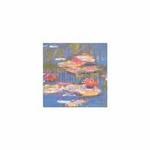
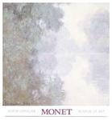
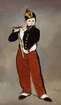

|
Artist: Thomas Kirk ( - )
Artworks in Museum Collections: (40)
Click the artwork titles below to see actual examples of artwork or works of art relevant to works by Thomas Kirk.
Fine Arts Museum of San Francisco
-
Thomas Kirk, Shakespeare - Measure For Measure - Act V, Scene I., 18th century
Fine Arts Museum of San Francisco
-
Thomas Kirk, Shakespeare - Titus Andronicus - Act IV Scene I., 18th century
-
Annie Leibovitz - Kirk Varnedoe/ New York 1988 toned gelatin silver The Mint Museums American
Fine Arts Museum of San Francisco
-
S. Kirk and Sons, Teapot, 1846
Fine Arts Museum of San Francisco
-
S. Kirk and Sons, Teapot, 1846
Fine Arts Museum of San Francisco
-
S. Kirk and Sons, Coffee pot, 1846
Fine Arts Museum of San Francisco
-
S. Kirk and Sons, Sugar bowl with lid, 1846
Fine Arts Museum of San Francisco
-
S. Kirk and Sons, Cream bowl, 1846
Fine Arts Museum of San Francisco
-
Edward Penfield, Harper"s Young People March 6, 1894 (The Fur Seal"s Tooth by Kirk Munro), 1894
Fine Arts Museum of San Francisco
-
Bonnie MacLean, Bill Graham Presents (72) Butterfield Blues Band; Roland Kirk Quartet, Fillmore Auditorium, 7/11-7/16, 1967
-
Frank C. Kirk - Rhapsody c. 1940s oil on canvas Los Angeles County Museum of Art American
Museum of Fine Arts
-
Samuel Kirk, 1793-1872 Chocolate pot United States, Maryland, (Baltimore), 1830-46 Silver 20.7 x 18.5 x
-
Thomas Gainsborough - The Hon. Mrs. Thomas Graham c. 1775-1777 oil on canvas National Gallery of Art British
Fine Arts Museum of San Francisco
-
Thomas Sully, The Reverend Thomas Stockton, 1843
-
Thomas Sully - Thomas Alston 1826 oil on canvas National Gallery of Art American
Museum of Fine Arts
-
Marked by Escallop w/ 2 pellets Lion sejant spoon flatware England, (London), 1585-86 Silver L.
Fine Arts Museum of San Francisco
-
Thomas Lupton, Thomas Chalmers, D.D, L.L.D, & F.R.S.E., 18th - 19th century
-
Thomas Sully - Thomas Handasyd Perkins 1832 oil on canvas Boston Athenaeum American
-
Thomas Sully - Mrs. Caleb Newbold and Her Son Thomas 1813 oil on canvas The Columbus Museum
Museum of Fine Arts
-
Unidentified artist Master spoon flatware England, (London), marked for 1514-15 Silver L. 18.26 cm (7
Fine Arts Museum of San Francisco
-
Thomas Cornell, Pig, 1960
Museum of Fine Arts
-
Marked by William Cary Apostle spoon flatware England, (London), 1660-61 Silver L. 19.1 cm (7
Museum of Fine Arts
-
Probably by Richard Cotton Apostle spoon flatware England, (London), 1619-20 Silver, parcel gilt L. 17.9
Fine Arts Museum of San Francisco
-
Thomas Hill, Reverend Thomas Starr King, 19th - 20th century
-
Hans Holbein the Younger - Sir Thomas More 1527 oil on panel The Frick Collection German
Fine Arts Museum of San Francisco
-
Thomas King, Thomas Parr, aged 152 years, 18th century
Museum of Fine Arts
-
Unidentified artist Apostle spoon flatware England, (London), 1599-1600 Silver, parcel gilt L. 18.1 cm (7
-
Thomas Cheesman - Thomas Moor Ld. Chancelour (after Hans Holbien) 1812 colored print University of California, Berkeley Art Museum English
Museum of Fine Arts
-
George de Forest Brush, American, 1855-1941 The Thomas Sisters (Margaret Thomas Gardiner and Helen Thomas
-
John Singleton Copley - Thomas Amory II c. 1770-1772 oil on canvas Corcoran Gallery of Art American
-
John Wesley Jarvis - Thomas Paine c. 1806-1807 oil on canvas National Gallery of Art American
-
Pierre-Jean David d'Angers - Thomas Jefferson 1832-1892 bronze National Gallery of Art French
-
Gilbert Stuart - Thomas Jefferson c. 1805-07 oil on canvas Bowdoin College Museum of Art American
-
Rembrandt Peale - Thomas Sully 1859 oil on canvas board National Gallery of Art American
-
John Singleton Copley - Thomas Greene 1758 oil on canvas Cincinnati Art Museum American
-
Arthur Pond - Thomas Gray probably 1731 oil on canvas The Fitzwilliam Museum British
-
John Hesselius - Thomas Chamberlaine 1772-75 oil on canvas The Detroit Institute of Art American
-
Gilbert Stuart - Thomas Jefferson c. 1821 oil on wood National Gallery of Art American
-
Lady Peel - Sir Thomas Lawrence 1827 oil on canvas The Frick Collection British
-
Ralph Earl - Thomas Earle 1800 oil on canvas National Gallery of Art American
Artnews Articles and Exhibition Information: (12)
Click on any of the links below to read about artnews or exhibitions related to Kirk
John Connelly Presents: Bonds of Love: A Project by Lisa Kirk
Interestingly enough, when we do succeed in reaching that enhanced state of awareness, it is often in a context of sharpened awareness of others of their unique particularity and independent existence. The reciprocal relationship between self and ...
National Ornamental Metal Museum: Some Like It Hot
Large scale pieces will be represented by photographs adjacent to the displayed smaller pieces by the following artists:
John Medwedeff
Joe Bonifas
Nol Putnam
Philip Baldwin
Japh Howard
Bernie Hosey
Scott L...
Frick Collection: Raeburn's The Rev. Walker Skating on Duddingston Loch, from the National Gallery of Scotland
The graceful figure elegantly clad in black and silhouetted against a
luminescent, late afternoon sky effectively conveys the subject’s sense of pleasure and ease in his
solitary activity. The painting will be displayed ...
Cork Gallery, Lincoln Center: Apple TART: Virtual Tart meets the Big Apple Sponsored by Visual Arts League
Through having their work on the Virtual TART site they have hit the world.
Dale Copeland has packed some of everyones artwork into 4 big suitcases and brought it to New York. Complete with photos of the a...
Museum of Modern Art: Matisse Picasso
Years in the making, this exhibition is the result of a unique collaboration between The Museum of Modern Art, New York; Tate, London; Musée Picasso and Musée National d'Art Moderne, Centre Georges Pompidou, Paris. It brings together masterpieces ...
Museum of Modern Art: Van Gogh's Postman: The Portraits of Joseph Roulin
Joseph Roulin was a postal employee in Arles, and van
Gogh painted him for the first time in the summer of
...
Museum of Modern Art: The MOMA and Heirs of Kasemir Malevich Reach Agreement
Glenn D. Lowry, Director of The Museum of Modern Art, said: It is rare that one can
find an equitable solution to such a complicated problem, and I am delighted that we
have found one where everyone wins. The Museum of Modern Art can cont...
Museum of Modern Art: Rober Storr Promoted to Senior Curator at the MOMA
The title of Senior Curator indicates exceptional merit, and is among the highest
distinctions this Museum can offer, remarked Mr. Lowry. This promotion recognizes
Robert Storrs tremendous contributions, both as an exhibition organizer, a...
Halle Saint Pierre: Douglas Padilla: dougieland Paris
Set at the foot of Sacre Coeur, the gorgeous white cathedral in Montmarte, the 18th arrondissement, home at the turn of the century to the likes of Toulouse-Latrec, Van Gogh, Utrillo, and Picasso, Halle Saint Pierre, part of the Paris museum syste...
National Gallery of Art: Deceptions and Illusions: Five Centuries of Trompe l’Oeil Painting
This exhibition is generously supported by Mary Jo and Robert L. Kirk. It is supported by an indemnity from the Federal Council on the Arts and the Humanities.
"Throughout the ages, trompe l’oeil has always been one of the most popular genre...
Vauxhall Open 2002 at St Peter’s Church: Celebrating Visual Artists Living or Working in the Lambeth Area
All the participants work in a mixture
of media such as painting, sculpture, installation, sound work, film and
video. Also, during the exhibition there will be high profile c...
Fruitmarket Gallery: Somewhere Everywhere Nowhere: Collections sans Frontieres III
Somewhere Nowhere Everywhere is an exhibition selected from the holdings of five of the FRACs, the FRACs du Grand Est – Alsace, Bourgogne, Champagne-Ardenne, Franche-Comté and Lorraine. In recognition of the FRACs’ particular status as regionally-...
Further Artwork and Information:
KIRK NET - Welcome
DBLP: Thomas Kirk
Thomas Kirk (1880 - 1938) Biography, Artwork Images, Exhibitions, Reviews
MyChefTom.com - Your Personal Chef, Thomas G. Kirk, P.C.S.
Thomas Kirk Hawkins
DBLP: Thomas Kirk
ROY THOMAS KIRK, SR
thomas kirk - ResearchIndex document query
Descendants of Thomas Kirk (1720-1800)
Thomas Kirk
Search the Art History Database for artists, titles, media, year, and other indepth information:
|
|
|
|
Vincent Van Gogh
Pavement Café
Our Supplier's price: $20.00

Claude Monet
Water Lilies, 1916 (detail I)
Our Supplier's price: $8.00

Claude Monet
Seine at Giverny, Morning Mists
Our Supplier's price: $16.00

Edouard Manet
The Young Piper
Our Supplier's price: $45.00
Vincent Van Gogh
Young Scheveningen Woman, Knitting: Facing Right
Our Supplier's price: $45.00
|